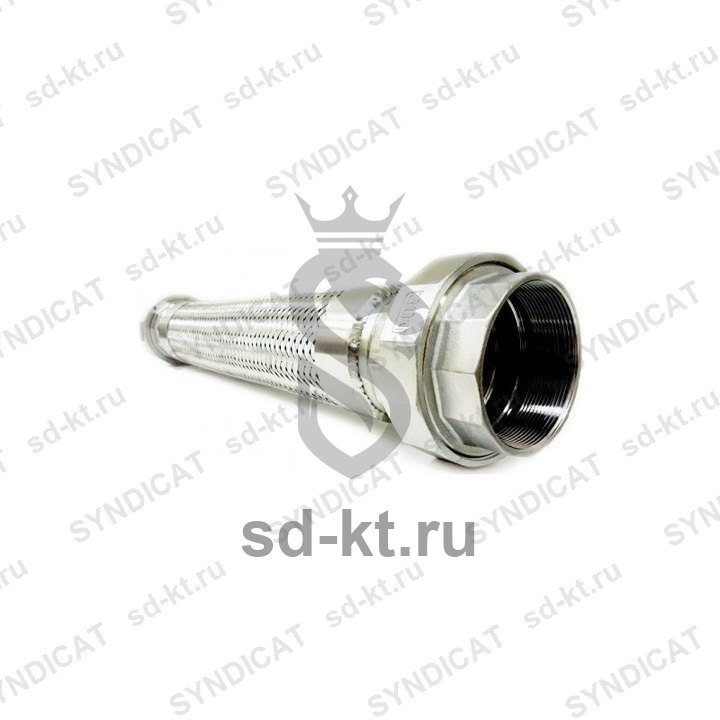

Подводка гибкая Dy-50 L-600мм
Артикул: 0455
Jiahao (China)
Раздел: Резервуарное оборудование · АЗС
Цена и наличие — по запросу. Поставляем оригинал и аналоги. Доставка по России.
Описание
Подводка гибкая Dy-50 L-600мм производства Jiahao (China) — позиция из раздела «Резервуарное оборудование» для АЗС. Компания SYNDICAT поставляет оборудование и комплектующие для автозаправочных и газозаправочных станций по всей России. Цена и наличие «Подводка гибкая Dy-50 L-600мм» — по запросу: оставьте заявку или позвоните, подберём оригинал или аналог и рассчитаем доставку.